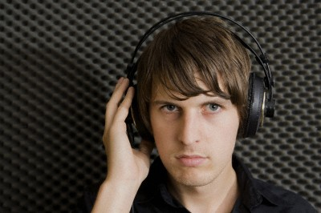
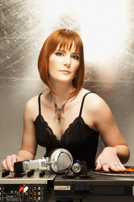
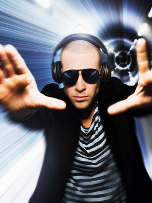

 
The station is popular because of DJ Twinkle.
When Twinkle was a younger lad he used to play this game with his friends.
The “it” would record an hour’s worth of music and the listeners would try to guest the name of the song.
If someonegot the title of any song right, the “it” would have to continue his role.
If no one got any of the song titles, a new “it” was pre-selected. So the more obscure the music, the better for the “it”.
This is what made DJ Twinkle a phenomenon: that was so well rounded with music.The station owners, now including
Global Communications, dedicate a slot for him and he can play anything he wants. This is how much trust they have on him.Heather,
better known by her air-name Lady Luck is a maverick in both station and off-station events.
Her wit and dexterity with sound instruments makes her a much coveted DJ.Coming from the Netherlands, where her air-name was The
Ice Queen, she won the Sverige National DJ championship where tens of thousands of DJs around the world participated.
Heather outplayed them all for 72 hours without skipping a beat, literally.Andrew is known as the Emo Boy of the sound waves.
His droll is quite entertaining, actually, and is a very sought after voice for commercial voice-overs. Andrew started off with
Warner Brothers as an advertisement foley artist. His opportunity came when one day the voice talent did not appear for an important
recording. Andrew auditioned for the part and without batting an eyelash, got the position, replacing the old voice-talent forever.
Lilithe is a diehard new age practitioner. You can hear her chimes and tubular bells on the air which she brings with her to the booth
every single day (she says they keep her luck.)The outstanding thing about Lilithe is her smooth swan voice.
Among a thousand people who auditioned to do the voice of the Japanese animated series Princess Hasegawa, when
the producers heard her, she was hired on the spot.Mark has got the be the most electrifying DJ ever. His
energetic voice and style will sure perk everyone up. Although his other job is DJing at night in local pubs,
he does the early shows on Hip Radio because of his pep.When asked how long does he sleep before he goes on air,
he says he doesn’t. He says he just reads the latest news online and prepares for his morning show. Of course he says he
sleeps the rest of the day until his night shift.Jay comes from generations of voice-talents. His mother, in fact, was the
great Vanessa George who was the darling of the silver screen for many years. Being wired to do this, nothing much can stress
him out, and which is why he seems calm all the time – thus getting the name Stoic.The great thing about his voice is that anyone
listening to him also calms down. For this reason, the station managers always put his slot after the traffic news.